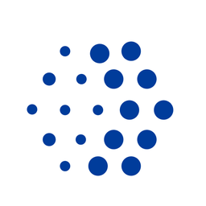

Map one upgrade path
Review a representative call-handling estate across Linux, virtualization, SIP, gateways, and support handoff points.

Anovia x Elinext proposalAnovia sells structure, stability, and control for enterprise IT. That promise gets tested most during customer upgrades.
Saw you are hiring for Linux systems upgrades and NG911 call-handling support. Here is how we would help your team move faster while the search continues.
The signal says Anovia is moving customer call-handling systems to current releases. That work likely spans Linux, Windows, SIP, gateways, virtualization, and customer change windows. The hard part is not one upgrade script. It is keeping support, rollback, and proof checks tight enough for emergency communications clients.
We would run a dedicated pilot squad under your service lead. The goal is to reduce upgrade backlog, document the path, and leave your support team stronger.
One Linux DevOps lead, one systems engineer, one QA automation engineer, and a fractional technical BA.
Review a representative call-handling estate across Linux, virtualization, SIP, gateways, and support handoff points.
Create rollback steps, smoke checks, and automated regression tests for high-risk services before customer windows.
Support one controlled upgrade with Anovia engineers, using clear owner, ticket, and escalation rules.
Hand over runbooks, test scripts, and support notes so future upgrades do not depend on one hire.
Elinext is a full-cycle software development company, active since 1997, with about 700 in-house specialists and no freelancers. For this work, the fit is our DevOps, backend, QA, and cloud delivery bench. We also bring ISO 27001 and ISO 9001 discipline for security and quality. Teams at Siemens, Broadcom, and Volkswagen are among named Elinext customers. That background fits a pilot where reliability, documentation, and clean handoff matter as much as code.

Elinext helped a telecom software provider simplify complex client-side installation using Java, Linux shell, and QA.
Read the case study
Elinext improved release flow for an infrastructure management provider with Jenkins, Groovy, and QA support.
Read the case study